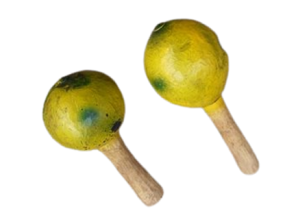

Maluku Utara

Ini adalah Cikir, Cikir dimainkan dengan cara digoyang-goyangkan. Cara membuat Cikir sangat mudah, hanya membutuhkan batok kelapa yang utuh dan biji-bijian. Cikir digunakan untuk mengiringi alat musik lain. Orang yang memainkan cikir juga menari untuk menghidupkan suasana.